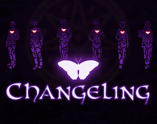

|  | |
| Tempo de jogo | Não Jogado |
| Última Atividade | Nunca |
| Adicionado | 30/03/2025 23:13:51 |
| Modificado | 30/03/2025 23:15:07 |
| Status de Conclusão | Not Played |
| Biblioteca | Itch.io |
| Fonte | itch.io |
| Plataforma | PC (Windows) |
| Data de Lançamento | 30/01/2019 |
| Pontuação da Comunidade | 70 |
| Avaliação da crítica | |
| Pontuação do Usuário | |
| Gênero | Indie Simulator Visual Novel |
| Desenvolvedor | Steamberry |
| Editor | Steamberry |
| Funções | Single Player |
| Links | Steam Official Itch Twitch |
| Tag | [GGDeals] Synced |
Come away, O human child! To the waters and the wild with a faery, hand in hand, for the world’s more full of weeping than you can understand.
~ W.B. Yeats
Description
Changeling is a GxB, non-stat raising, full-length visual novel about love, reconciliation, and trying to survive in a dangerous supernatural world. Play through about 30-40 hours of content and over 40 unique endings while trying to survive the perils of a newly discovered paranormal community. Romance one of 6 love interests as you uncover information about the supernatural and the secrets from your own past - all while you try to patch up your relationship with your twin brother who grows more and more suspicious of you with each passing day.
Story
The human world accepted as reality is only a thin veneer under which lies a world of supernatural creatures, entities, and people. They live beside humans hiding their nature or walking among them unseen. And most people go about their lives entirely unaware of the dangers around them. Mysterious situations are written off as fake, or they're glossed over with some sort of mundane explanation.
The same was true for Nora, a normal girl struggling with the usual litany of everyday problems - including her crumbling relationship with an angry, resentful twin brother with whom she's nearly given up on reconciling.
But her family's return to the town in which she'd grown up set in motion a chain of events that would shatter every illusion she had about a world she thought she knew. Her eyes newly opened to the truth around her, Nora begins a journey to uncover the secrets of her own mysterious past and the reason for her brother's bitter hatred toward her. Alongside her best friend, and a group of unusual guys she met after her return, Nora begins to chip away at the lies shrouding her life. Lies that have been haunting her since childhood.
But in a world where Vampires, Werewolves, and Faeries are real, learning the truth may come at a high cost.
Features
*calculated at a reading speed of 300 wpm